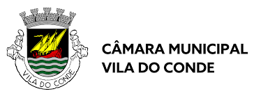

Experiência Profissional

Estagiário de sistema de informação geográfica - CMVDC
Na qualidade de Tecnico Superior de Sistemas de Informação Geográfica, início o meu estágio curricular na Camara Municipal de Vila do Conde com duração de 108 horas
dez de 2024 - o momento · 2 mesesProfessor de tecnologia da informação e comunicações - CMPDV
Na Função de Docente de Atividades De Enriquecimento Curricular - Ensino de TIC - no agrupamento Escolas de Aver-o-Mar e agrupamento de Escolas Campo Aberto
out de 2024 - o momento · 4 meses
Coordenador Geral do 3º Encontro Nacional de Estudantes de Geografia /h3>
Na qualidade de estudante de Geograa, tive a oportunidade de desenvolver muitas valências, nomeadamente através do cargo de coordenador geral do Il Encontro Nacional de Estudantes de Geograa.
set de 2022 - mar de 2023 · 7 meses